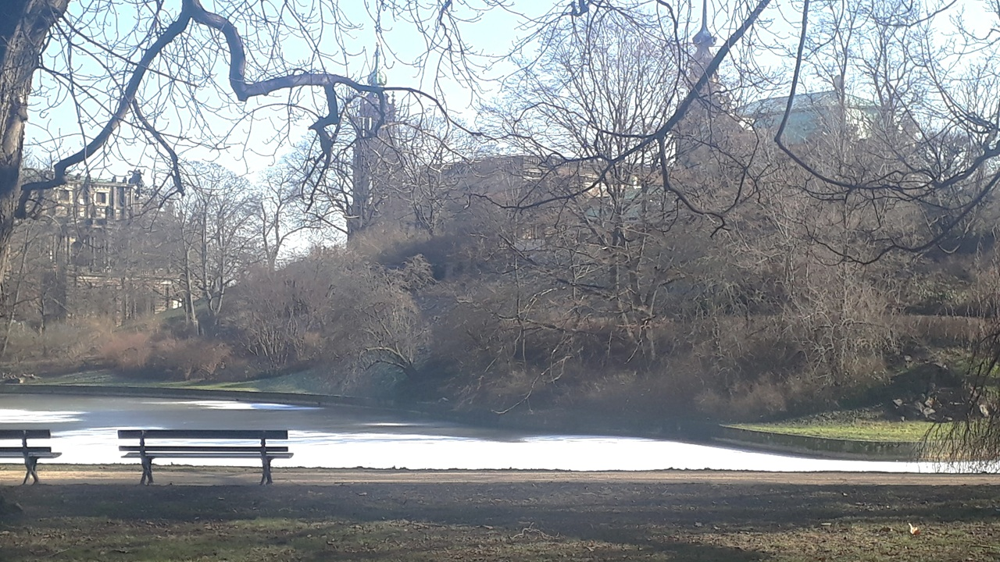

By Lesandro Ponciano , February 15, 2026.
We live in an age in which notifications, institutional demands, and algorithms eat away at the time needed to think and grow intellectually. This puts us face to face with an essential question: what does it mean to protect ourselves from external excesses so that we can preserve the energy and creative freedom needed for scientific and literary work? To answer this, we must first recover the essence of being a scientist or a writer—and identify exactly what it is we want to protect.

At its core, what does it mean to be a writer or a scientist? There are interesting connections between doing science and producing literature. The connection lies not in the method used, but in the relationship a person develops with what they have created, whether a novel, a poem, a thesis, or a scientific paper. Nearly twenty years ago, when I read Rainer Maria Rilke’s (1875–1926) letters in Cartas a um Jovem Poeta, I was doing undergraduate research. Some of his views and advice—especially those in the first letter—struck me as equally applicable to a young scientist. Consider the following passage from that first letter:
You ask whether your verses are good. You ask me that. You have asked others, before. You send them to magazines. You compare them with other poems, and you worry when certain editors turn your efforts down. Now (since you have allowed me to offer you advice) let me ask you to give up all that. You are looking to the outside, and that above all you should not be doing now. Nobody can advise you and help you, nobody. There is only one way. Go into yourself. Examine the reason that bids you to write; check whether it reaches its roots into the deepest region of your heart, admit to yourself whether you would die if it should be denied you to write. This above all: ask yourself in your night’s quietest hour: must I write? Dig down into yourself for a deep answer. And if it should be affirmative, if it is given to you to respond to this serious question with a loud and simple “I must,” then construct your life according to this necessity; your life right into its most inconsequential and slightest hour must become a sign and witness of this urge.
Rilke emphasizes that being a poet is not a choice but a necessity, and that one’s worth is not validated externally, but internally. Much of what lies outside us can therefore become noise that contributes little to the creative process. Is it any different for a scientist? I believe some researchers relate to science in this same inward, personal way. A researcher finds fulfillment in science, meeting an inner need that goes far beyond choosing a profession. They are intrinsically motivated, driven by curiosity and the desire to uncover the unknown. The following quotations—from Peter J. Ratcliffe in a 2017 interview with Cell Press and Artur Ávila in a 2014 interview with FAPESP—illustrate this view.
The most important ingredient for a successful career is finding a topic that excites you, digging in to answer interesting and important questions, and having a real passion for science—it’s not work, it’s a hobby, and there’s nothing else you would rather be doing (at least most of the time…). (Charles M. Rice, in a 2017 interview with Cell Press)
I work on things I enjoy, on problems that particularly interest me and that I find beautiful. Problems considered difficult are often fundamental because they involve something of great interest. Theories also develop around these problems. Mathematicians are generally drawn to the richness of the theory surrounding these objects. Working on such problems allows one to explore more rewarding things. (Artur Ávila, in a 2014 interview with FAPESP; translated from Portuguese)
There is a long-running discussion about how scientists choose their fields and research questions. It is not a clearly defined psychological process that can easily be replicated. Yet something often begins to develop within us after an encounter with an external idea. At that stage, we need to protect it from excessive influences so it can fully take shape.
Whether creating or investigating, people need the ability to withdraw and protect themselves from interruptions, notifications, and demands unrelated to their line of thought. Because this process develops internally and needs protection from external criticism and judgment, both literary creation and the development of scientific ideas require some shelter from the outside world. But how can we achieve that protection?
Recently, I read Ecce Homo, by Friedrich Nietzsche (1844–1900). In this work, the author examines the process through which he developed his thought. He discusses how he organized himself, what he pursued, what he avoided, and what he achieved. He explains how he tried to protect himself from external instability in order to secure the time and energy needed for his work. The passage I have in mind is reproduced below:
In all these things—in the choice of food, place, climate, and recreation—the instinct of self-preservation is dominant, and this instinct manifests itself with least ambiguity when it acts as an instinct of defence. To close one's eyes to much, to seal one's ears to much, to keep certain things at a distance—this is the first principle of prudence, the first proof of the fact that a man is not an accident but a necessity. The popular word for this instinct of defence is taste. A man's imperative command is not only to say “no” in cases where “yes” would be a sign of “disinterestedness,” but also to say “no” as seldom as possible. One must part with all that which compels one to repeat “no,” with ever greater frequency. The rationale of this principle is that all discharges of defensive forces, however slight they may be, involve enormous and absolutely superfluous losses when they become regular and habitual. Our greatest expenditure of strength is made up of those small and most frequent discharges of it.
Every adult understands that we need to know how to say no in situations that do not suit us. Someone who cannot refuse something inappropriate or senseless ends up in exhausting, uncomfortable, and unpleasant situations that cause stress and psychological distress. But, in Nietzsche’s view, it is not enough simply to say no. We should arrange our lives so that we do not have to say no—or have to say it as rarely as possible. Saying no itself also brings stress and psychological discomfort.
Being in a situation where other people expect something different from what you can offer is exhausting. You either say yes and sacrifice yourself, or keep saying no and sacrifice yourself that way. Nietzsche describes how he chose his circumstances to avoid these situations and thus preserve the comfort and energy needed to devote himself to his work.
In science, it is almost impossible to isolate oneself completely in order to develop a body of work driven solely by personal interest. Much of scientific work is dialectical: it involves interactions with students, other researchers, scientific communities, and funding agencies. These interactions are often beneficial. It is not easy to recognize when the external environment is significantly diverting us from what we would internally like to pursue. A few situations can help us think this through.
Researchers are often compelled to investigate topics that do not genuinely interest them. This happens because funding agencies, by defining their funding priorities, end up steering the direction of scientific research. These priorities are intended to promote research that serves a country’s interests, but they can also compromise curiosity-driven choice, turning it into a strategic response to external demands. What Nietzsche might call self-preservation gives way to forced adaptation, in which the noise of other people’s priorities gradually silences the inner voice that should guide one’s vocation.
There are other dilemmas in this context. Researchers are often invited to participate in studies that do not interest them, review papers outside their expertise, or debate issues unrelated to their field. In such situations, both saying yes and saying no can be costly. That is why some researchers prefer to remain anonymous in certain circles: it is better not to be asked than to have to manage a constant stream of refusals, allowing them to focus on their own topics of interest.
Finally, self-preservation can also have side effects. When researchers are asked to evaluate someone else’s work, their judgment may be biased by the psychological, personal, or social cost of rejection. To avoid the strain, some end up approving work that does not deserve it. I once met an assistant who worked with a senior researcher. He told me about a mediocre master’s student’s work; the assistant felt obliged to persuade the student to withdraw from the presentation because he knew that the senior researcher, who had the final say, would approve the student rather than bear the bureaucratic and psychological cost of saying no. In this particular case, self-defense comes close to negligence.
Rilke’s call to turn inward and Nietzsche’s idea of self-defense can also be understood as a search for the freedom to discover and develop oneself. This means not becoming entangled in external interests, so as to devote oneself to developing one’s own. In this respect, they echo what we find in the poem No! All I want is freedom! (Portuguese: “Não! Eu só quero Liberdade”) by Fernando Pessoa (1888–1935). The poet is quite explicit:
I don’t want it! Give me freedom! I want to be equal to myself. Don’t geld me with ideas! (Portuguese: "Não quero! Deem-me a liberdade! Quero ser igual a mim mesmo. Não me capem com ideais!")
This is about safeguarding one’s identity and preventing the noise of other people’s demands from diverting attention from what truly matters. The physical world is a subject of analysis for both poets and scientists, but outside perspectives can become noise that prevents the distance needed for original ideas to flourish. Consider the present day, with its many notifications, requests, and informational noise from countless social networks and devices. Many people seem to think we are available at all times to look at, respond to, and satisfy these demands.
Technology’s excessive attempts to help can backfire. Consider artificial intelligence systems that constantly suggest what we should write, such as the autocomplete features in text editors and email. By offering ready-made phrases before we have formulated our own, AI can interrupt our trains of thought. Although useful for efficiency, these systems also carry a risk of dependency and may undermine independent thinking if habitually used as a shortcut. Just as we would not want someone talking nonstop beside us while we think, we should not want an AI intervening at every moment of reflection. Thinking requires freedom and focus: “I want to be true to myself.” AI is a useful and inevitable resource, but one that still needs refinement so it does not become an obstacle to intellectual autonomy.
Recognizing that we cannot embrace every complexity of the world is an act of maturity. Although legitimate demands exist everywhere, that does not oblige anyone to be interested in all of them. Not every poet writes about love, and not every scientist works in physics, however fascinating those subjects may be. It is natural and understandable that both seek to protect their intellectual space from intrusions that do not contribute to their work. But I believe this is even harder in today’s noisy world than it was when Rilke, Nietzsche, and Pessoa were writing.
Note on translations: The English translation of the fragment from Fernando Pessoa's poem is attributed to Chris Daniels, in The Collected Poems of Álvaro de Campos, Vol. 2 (1928–1935). The fragment from Rainer Maria Rilke's Letters to a Young Poet uses the translation by Charlie Louth, published by Penguin Classics in 2011. The English translation of the passage from Friedrich Nietzsche's Ecce Homo is attributed to Anthony M. Ludovici, in the edition available through the Internet Archive.